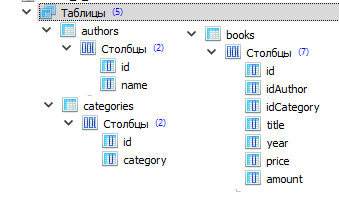

Задача 1. Разработайте решение с двумя приложениями – первое,
серверное приложение, предоставляет WebAPI (REST набор запросов)
второму, клиентскому приложению. Клиентский проект
реализуйте на HTML5, CSS3, Bootstrap, jQuery.
Решение должно реализовать следующие запросы к базе данных
(структура базы данных на следующем рисунке, используйте
Entity Framework Core). Дизайн клиентского приложения произволен,
но все-таки требуется выводить данные о разработчике и
задание на разработку по отдельным командам.

- Запрос 1. Вывести полную информацию обо всех книгах
- Запрос 2. Вывести название, год издания, автора и цену учебников по Android
- Запрос 3. Вывести название, год издания и количество задачников по LINQ
- Запрос 4. Вывести автора, название, категорию и стоимость для каждой книги, количество которых от 4 до 6
- Запрос 5. Вывести фамилии и инициалы авторов и количество книг этих авторов
- Запрос 6. Для категорий книг вывести количество, минимальную стоимость книги, среднюю стоимость книги, максимальную стоимость книги
- Запрос 7. Для всех книг автора Абрамян М.Э. увеличить стоимость книг на 15%
- Запрос 8. Уменьшить количество книг по C++ на 1, не допускать отрицательных значений.
Также необходимо выводить все таблицы в
отдельных страницах, реализовать CRUD-операции
с таблицами (удаление - безопасное).